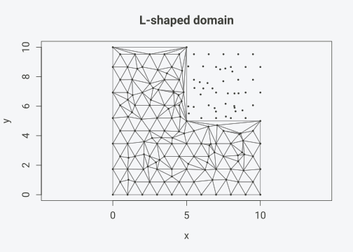
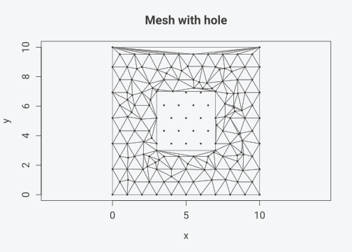

Installation
install.packages("tulpaMesh") # CRAN
install.packages("pak") # development version
pak::pak("gcol33/tulpaMesh")Custom boundaries
By default, tulpa_mesh() uses the convex hull extended
by 10%. You can provide an explicit boundary as a coordinate matrix:
set.seed(42)
coords <- cbind(runif(80, 1, 9), runif(80, 1, 9))
# L-shaped boundary
bnd <- rbind(
c(0, 0), c(10, 0), c(10, 5),
c(5, 5), c(5, 10), c(0, 10)
)
mesh <- tulpa_mesh(coords, boundary = bnd, max_edge = 1, extend = 0)
plot(mesh, vertex_col = "black", main = "L-shaped domain")
sf polygon boundaries
Pass an sf polygon directly. CRS is preserved automatically.
library(sf)
#> Linking to GEOS 3.14.1, GDAL 3.12.1, PROJ 9.7.1; sf_use_s2() is TRUE
poly <- st_polygon(list(rbind(
c(0, 0), c(10, 0), c(10, 10), c(0, 10), c(0, 0)
)))
sfc <- st_sfc(poly, crs = 32633)
mesh_sf <- tulpa_mesh(coords, boundary = sfc, max_edge = 1, extend = 0)
mesh_crs(mesh_sf) # CRS attached
#> Coordinate Reference System:
#> User input: EPSG:32633
#> wkt:
#> PROJCRS["WGS 84 / UTM zone 33N",
#> BASEGEOGCRS["WGS 84",
#> ENSEMBLE["World Geodetic System 1984 ensemble",
#> MEMBER["World Geodetic System 1984 (Transit)"],
#> MEMBER["World Geodetic System 1984 (G730)"],
#> MEMBER["World Geodetic System 1984 (G873)"],
#> MEMBER["World Geodetic System 1984 (G1150)"],
#> MEMBER["World Geodetic System 1984 (G1674)"],
#> MEMBER["World Geodetic System 1984 (G1762)"],
#> MEMBER["World Geodetic System 1984 (G2139)"],
#> MEMBER["World Geodetic System 1984 (G2296)"],
#> ELLIPSOID["WGS 84",6378137,298.257223563,
#> LENGTHUNIT["metre",1]],
#> ENSEMBLEACCURACY[2.0]],
#> PRIMEM["Greenwich",0,
#> ANGLEUNIT["degree",0.0174532925199433]],
#> ID["EPSG",4326]],
#> CONVERSION["UTM zone 33N",
#> METHOD["Transverse Mercator",
#> ID["EPSG",9807]],
#> PARAMETER["Latitude of natural origin",0,
#> ANGLEUNIT["degree",0.0174532925199433],
#> ID["EPSG",8801]],
#> PARAMETER["Longitude of natural origin",15,
#> ANGLEUNIT["degree",0.0174532925199433],
#> ID["EPSG",8802]],
#> PARAMETER["Scale factor at natural origin",0.9996,
#> SCALEUNIT["unity",1],
#> ID["EPSG",8805]],
#> PARAMETER["False easting",500000,
#> LENGTHUNIT["metre",1],
#> ID["EPSG",8806]],
#> PARAMETER["False northing",0,
#> LENGTHUNIT["metre",1],
#> ID["EPSG",8807]]],
#> CS[Cartesian,2],
#> AXIS["(E)",east,
#> ORDER[1],
#> LENGTHUNIT["metre",1]],
#> AXIS["(N)",north,
#> ORDER[2],
#> LENGTHUNIT["metre",1]],
#> USAGE[
#> SCOPE["Navigation and medium accuracy spatial referencing."],
#> AREA["Between 12°E and 18°E, northern hemisphere between equator and 84°N, onshore and offshore. Austria. Bosnia and Herzegovina. Cameroon. Central African Republic. Chad. Congo. Croatia. Czechia. Democratic Republic of the Congo (Zaire). Gabon. Germany. Hungary. Italy. Libya. Malta. Niger. Nigeria. Norway. Poland. San Marino. Slovakia. Slovenia. Svalbard. Sweden. Vatican City State."],
#> BBOX[0,12,84,18]],
#> ID["EPSG",32633]]Polygons with holes
Holes in sf polygons become constraint edges that the mesh respects:
outer <- rbind(c(0, 0), c(10, 0), c(10, 10), c(0, 10), c(0, 0))
hole <- rbind(c(3, 3), c(7, 3), c(7, 7), c(3, 7), c(3, 3))
poly_h <- st_polygon(list(outer, hole))
# Remove points inside the hole
inside <- coords[, 1] > 3 & coords[, 1] < 7 & coords[, 2] > 3 & coords[, 2] < 7
pts_outside <- coords[!inside, ]
mesh_h <- tulpa_mesh(pts_outside, boundary = st_sfc(poly_h), max_edge = 1, extend = 0)
plot(mesh_h, vertex_col = "black", main = "Mesh with hole")
Barrier models
Physical barriers (coastlines, rivers) prevent the spatial field from
smoothing across them. Mark barrier triangles and pass them to
fem_matrices():
set.seed(42)
coords <- cbind(runif(100, 0, 10), runif(100, 0, 10))
mesh <- tulpa_mesh(coords, max_edge = 0.8)
# A river running through the domain
river <- rbind(c(4, 0), c(6, 5), c(4, 10))
bt <- barrier_triangles(mesh, river)
cat(sum(bt), "barrier triangles out of", mesh$n_triangles, "\n")
#> 53 barrier triangles out of 511
# FEM with barrier: stiffness is zeroed for barrier triangles
fem_b <- fem_matrices(mesh, barrier = bt)
# Compare: barrier mesh has fewer stiffness nonzeros
fem_n <- fem_matrices(mesh)
cat("Nonzeros without barrier:", length(fem_n$G@x), "\n")
#> Nonzeros without barrier: 1809
cat("Nonzeros with barrier: ", length(fem_b$G@x), "\n")
#> Nonzeros with barrier: 1671Mesh subdivision
Split every triangle into 4 for uniform refinement:
set.seed(42)
mesh <- tulpa_mesh(cbind(runif(20), runif(20)))
sub <- subdivide_mesh(mesh)
cat("Original:", mesh$n_triangles, "triangles\n")
#> Original: 46 triangles
cat("Subdivided:", sub$n_triangles, "triangles\n")
#> Subdivided: 184 trianglesAdaptive refinement
Refine only where error indicators are high. This is the typical workflow after an initial SPDE solve: the solver returns posterior variance per triangle, and you refine where variance is large.
set.seed(42)
mesh <- tulpa_mesh(cbind(runif(50), runif(50)), max_edge = 0.15)
# Simulate error indicators (high in one corner)
q <- mesh_quality(mesh)
centroids <- cbind(
(mesh$vertices[mesh$triangles[,1], 1] + mesh$vertices[mesh$triangles[,2], 1] +
mesh$vertices[mesh$triangles[,3], 1]) / 3,
(mesh$vertices[mesh$triangles[,1], 2] + mesh$vertices[mesh$triangles[,2], 2] +
mesh$vertices[mesh$triangles[,3], 2]) / 3
)
error <- exp(-3 * centroids[, 1]) # high error near x = 0
refined <- refine_mesh(mesh, error, fraction = 0.3)
cat("Before:", mesh$n_triangles, "triangles\n")
#> Before: 187 triangles
cat("After: ", refined$n_triangles, "triangles\n")
#> After: 326 trianglesMesh operations
Extract submesh
set.seed(42)
mesh <- tulpa_mesh(cbind(runif(50, 0, 10), runif(50, 0, 10)), max_edge = 1)
# Keep only left half
q <- mesh_quality(mesh)
centroids_x <- (mesh$vertices[mesh$triangles[,1], 1] +
mesh$vertices[mesh$triangles[,2], 1] +
mesh$vertices[mesh$triangles[,3], 1]) / 3
left <- subset_mesh(mesh, centroids_x < 5)
left
#> tulpa_mesh:
#> Vertices: 76
#> Triangles: 128
#> Edges: 203Find disconnected components
comps <- mesh_components(mesh)
cat("Number of components:", max(comps), "\n")
#> Number of components: 1Converting from fmesher
If you have an existing fmesher mesh, convert it directly:
library(fmesher)
fm <- fm_mesh_2d(loc = coords, max.edge = c(1, 3))
tm <- as_tulpa_mesh(fm)
tm
#> tulpa_mesh:
#> Vertices: 507
#> Triangles: 965
#> Edges: 1471FEM matrices from the converted mesh match fmesher’s output exactly.